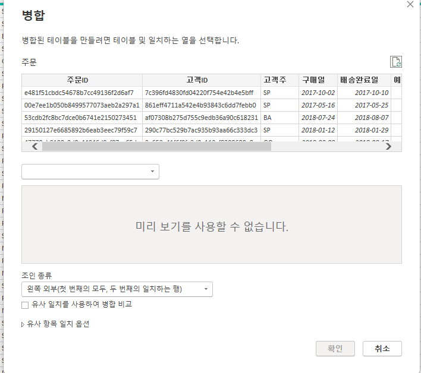
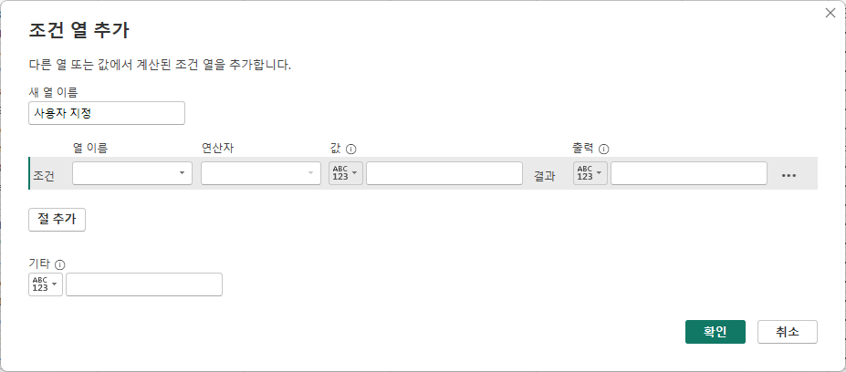
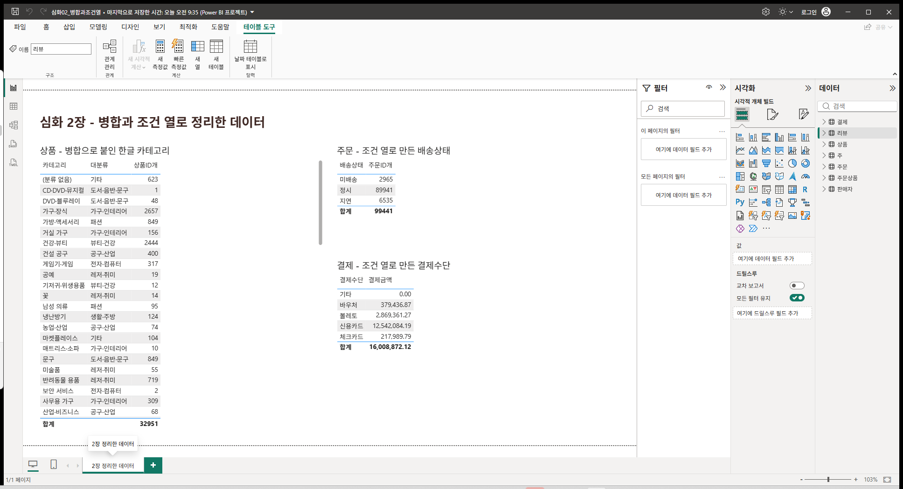

2장. Power Query 심화 - 병합과 조건 열
학습 목표
- 따옴표 안의 줄 바꿈 때문에 쪼개진 행을 바로잡는다.
- 로드하지 않는 도우미 쿼리를 만들고, 쿼리 병합으로 다른 테이블의 열을 붙인다.
- 사용자 지정 열(if … then … else)과 조건 열로 분석에 쓸 새 열을 만든다.
2-1. 이 장에서 할 일
1장에서 불러온 데이터는 아직 분석하기 불편하다.
| 문제 | 해결 | 절 |
|---|---|---|
| 리뷰가 여러 행으로 쪼개졌다 | CSV 를 읽는 방식 바꾸기 | 2-2 |
| 주문에 고객 정보(같은 사람인지, 어느 주인지)가 없다 | 고객 쿼리를 병합 | 2-3, 2-4 |
| 주문에 날짜/시간 열만 있고 "배송이 늦었나?" 가 없다 | 사용자 지정 열, 조건 열 | 2-5, 2-6 |
| 카테고리 이름이 포르투갈어다 | 번역 쿼리를 두 번 병합 | 2-8 |
| 열 이름이 영어다, 필요 없는 열이 많다 | 열 제거, 이름 바꾸기 | 2-7 |
1장의 내Olist.pbix 를 열고 홈 → 데이터 변환 으로 Power Query 편집기를 연다.
2-2. 리뷰 - 따옴표 안의 줄 바꿈
CSV 에서 쉼표나 줄 바꿈이 들어간 값은 큰따옴표(")로 감싼다. 그런데 기본 설정(QuoteStyle.None)은 따옴표 안이라도 줄 바꿈을 만나면 새 행으로 읽는다.
- 리뷰 쿼리의 원본 단계를 누른다.
-
수식 입력줄 끝의
QuoteStyle=QuoteStyle.None을QuoteStyle=QuoteStyle.Csv로 바꾸고 Enter. 식을 고치기 어렵다면 원본 단계 오른쪽 톱니바퀴 → 줄 바꿈 을모든 줄 바꿈 적용에서따옴표 붙은 줄 바꿈 무시로 바꾸고 확인 해도 같은 식이 된다. -
맨 아래 변경된 유형 단계를 다시 누른다. 이상한 값이 섞여 있던
review_score열이 1~5 숫자만 남는다. review_id,order_id,review_score,review_creation_date네 열을 Ctrl 을 누른 채 고르고 홈 → 열 제거 ▾ → 다른 열 제거. 리뷰 글 열은 크고 이 과정에서 쓰지 않으니 뺀다.- 열 이름을 리뷰ID, 주문ID, 평점, 리뷰작성일 로 바꾼다. (머리글 두 번 클릭)
- 리뷰작성일 머리글의 형식 아이콘을 눌러 날짜 로 바꾼다.
이제 리뷰는 정확히 100,000행이다. (리뷰ID 가 같은 줄이 조금 있지만 원본 데이터 그대로이므로 두자)
2-3. 도우미 쿼리 만들기 - 로드 사용 안 함
병합에 쓸 재료 쿼리 세 개를 불러온다. 1장처럼 새 원본 → 텍스트/CSV 로 불러오고 원본 경로를 DataPath & "\…" 로 바꾼다.
| 파일 | 쿼리 이름 | 쓰는 곳 |
|---|---|---|
| olist_customers_dataset.csv | 고객 | 주문에 고객 정보 붙이기 |
| product_category_name_translation.csv | 카테고리번역 | 포르투갈어 → 영어 |
| 카테고리_한글.csv | 카테고리한글 | 영어 → 한글, 대분류 |
이 세 쿼리는 다른 쿼리를 만드는 재료일 뿐, 보고서에 테이블로 넣을 필요는 없다.
- 쿼리 목록에서 고객 을 오른쪽 클릭 → 로드 사용 을 눌러 체크를 끈다.
- 경고 창이 나오면 계속. 쿼리 이름이 기울임꼴로 바뀐다.
- 카테고리번역, 카테고리한글도 똑같이 한다.
로드 사용 안 함 쿼리는 Power Query 안에서만 쓰이고 모델(데이터 창)에는 나타나지 않는다. 파일이 작아지고 데이터 창이 깔끔해진다.
2-4. 쿼리 병합 - 주문에 고객 정보 붙이기
병합은 엑셀의 VLOOKUP 과 비슷하다. 두 테이블에서 같은 값을 가진 열(키)을 짝지어, 한쪽 테이블에 다른 쪽의 열을 붙인다.
- 주문 쿼리를 고르고 홈 → 쿼리 병합.
- 위쪽 표(주문)에서
customer_id머리글을 누른다. - 아래 목록에서 고객 을 고르고, 아래쪽 표에서도
customer_id를 누른다. - 조인 종류는 왼쪽 외부(첫 번째의 모두, 두 번째의 일치하는 행) 그대로 두고 확인.

맨 오른쪽에 고객 이라는 열이 생기고 값이 모두 Table 이다. 행마다 짝이 맞는 고객 행이 표 모양으로 들어 있다는 뜻이다.
- 고객 머리글 오른쪽의 확장 단추(⇆)를 누른다.
customer_unique_id,customer_state만 체크하고, 아래 원래 열 이름을 접두사로 사용 의 체크를 끈 뒤 확인.
단계 병합된 쿼리, 확장된 고객 이 생기고, 주문마다 고객 고유 ID 와 주(state)가 붙었다.
| 조인 종류 | 결과 |
|---|---|
| 왼쪽 외부 | 첫 번째 테이블의 모든 행 + 짝이 있으면 그 값 (없으면 null) ← 가장 많이 쓴다 |
| 내부 | 양쪽에 짝이 있는 행만 |
| 왼쪽 앤티 | 첫 번째 테이블에서 짝이 없는 행만 (빠진 데이터 찾기에 쓴다) |
2-5. 사용자 지정 열 - 날짜와 배송일수
주문에는 날짜/시간 열이 5개 있다. 분석에는 날짜만 있으면 된다.
- 열 추가 → 사용자 지정 열.
- 새 열 이름
구매일, 사용자 지정 열 수식DateTime.Date([order_purchase_timestamp])→ 확인. (오른쪽 사용 가능한 열 목록에서 열을 두 번 누르면[열 이름]이 수식에 들어간다) - 같은 방법으로 두 열을 더 만든다.
사용자 지정 열 창에는 데이터 형식을 고르는 칸이 없다. 그래서 새 열 머리글에 형식 아이콘
ABC123(형식 없음)이 붙는다. 형식은 2-6 끝에서 한꺼번에 정한다.
| 새 열 이름 | 식 | 나중에 정할 형식 |
|---|---|---|
| 구매일 | DateTime.Date([order_purchase_timestamp]) |
날짜 |
| 배송완료일 | DateTime.Date([order_delivered_customer_date]) |
날짜 |
| 예상배송일 | DateTime.Date([order_estimated_delivery_date]) |
날짜 |
- 배송에 걸린 날 수를 계산한다. 새 열 이름
배송일수, 식은
if [배송완료일] = null then null else Duration.Days([배송완료일] - [구매일])
날짜에서 날짜를 빼면 기간(duration)이 되고, Duration.Days 가 그 기간의 날 수를 꺼낸다. 아직 배송되지 않은 주문은 배송완료일이 비어 있으므로(null) 계산하지 않고 null 로 둔다.
- 배송이 늦었는지 표시하는 열을 하나 더 만든다. 새 열 이름
배송상태.
if [배송완료일] = null then "미배송"
else if [배송완료일] > [예상배송일] then "지연"
else "정시"
if 식 읽는 법 - 위에서부터 차례로 조건을 본다. 첫 조건이 맞으면 "미배송", 아니면 다음 조건을 보고, 모두 아니면 마지막 else 의 값. 식 안에서 줄을 바꿔도 된다.
2-6. 조건 열 - 주문상태를 한글로
같은 if 식을 대화 상자로 만들 수도 있다. 열 추가 → 조건 열.

| 칸 | 값 |
|---|---|
| 새 열 이름 | 주문상태 |
| 첫 줄(If) | 열 order_status · 연산자 같음 · 값 delivered · 출력 배송완료 |
| 절 추가 → Else If | order_status 같음 shipped → 배송중 |
| 절 추가 → Else If | order_status 같음 canceled → 취소 |
| 기타(Else) | 기타 |
확인 하면 단계 추가된 조건 열 이 생긴다. 수식 입력줄을 보면 2-5 에서 직접 쓴 것과 같은 모양의 if 식이다.
새 열의 형식 정하기
2-5, 2-6 에서 만든 열 6개는 아직 형식이 없다(ABC123). 형식이 없으면 3장에서 날짜 관계를 만들 수 없고, 배송일수 평균도 구할 수 없다.
- 구매일 머리글을 누르고 Ctrl 을 누른 채 배송완료일, 예상배송일 을 누른다.
- 아무 머리글의 형식 아이콘(
ABC123)을 눌러 날짜. - 배송일수 는 정수, 배송상태·주문상태 는 텍스트 로 바꾼다.
형식을 연달아 바꾸면 단계 변경된 유형1 하나에 모인다. ("현재 전환 바꾸기" 를 묻는 창이 나오면 현재 전환 바꾸기 를 누른다)
2-7. 열 정리
주문 에서
customer_id,order_status와 날짜/시간 열 5개(order_purchase_timestamp~order_estimated_delivery_date)를 고르고 열 제거.- 이름 바꾸기:
order_id→ 주문ID,customer_unique_id→ 고객ID,customer_state→ 고객주.

나머지 쿼리도 정리한다.
| 쿼리 | 할 일 |
|---|---|
| 주문상품 | shipping_limit_date 제거. 이름: order_id→주문ID, order_item_id→순번, product_id→상품ID, seller_id→판매자ID, price→가격, freight_value→배송비 |
| 결제 | 조건 열 결제수단 (credit_card→신용카드, boleto→볼레토, voucher→바우처, debit_card→체크카드, 기타) 추가, 결제수단 형식을 텍스트 로, payment_type 제거. 이름: order_id→주문ID, payment_sequential→결제순번, payment_installments→할부개월, payment_value→결제금액 |
| 판매자 | seller_zip_code_prefix 제거. 이름: seller_id→판매자ID, seller_city→판매자도시, seller_state→판매자주 |
| 주 | state → 주코드 |
볼레토(boleto) 는 브라질에서 많이 쓰는 결제 방식으로, 고지서를 받아 은행이나 편의점에서 내는 현금 결제다.
2-8. 상품 - 두 번 병합하기
상품의 카테고리는 포르투갈어(beleza_saude)다. 카테고리번역으로 영어(health_beauty)를 붙이고, 다시 카테고리한글로 한글(건강·뷰티)과 대분류를 붙인다.
- 상품 쿼리 → 홈 → 쿼리 병합. 상품
product_category_name↔ 카테고리번역product_category_name· 왼쪽 외부 → 확인. - 확장:
product_category_name_english만, 접두사 끄기. - 다시 쿼리 병합. 상품
product_category_name_english↔ 카테고리한글category_english→ 확인. - 확장:
카테고리,대분류, 접두사 끄기. - 카테고리 열을 내려 보면
null이 있다. 원본에 카테고리가 비어 있는 상품(610개)과 번역 파일에 없는 카테고리 2개다.- 카테고리 머리글 오른쪽 클릭 → 값 바꾸기 → 찾을 값
null, 바꿀 항목(분류 없음). - 대분류 도 같은 방법으로
null→기타.
- 카테고리 머리글 오른쪽 클릭 → 값 바꾸기 → 찾을 값
product_id,카테고리,대분류만 고르고 다른 열 제거. product_id 이름을 상품ID 로.
2-9. 닫기 및 적용, 결과 확인
홈 → 닫기 및 적용. 데이터 창에 고객·카테고리번역·카테고리한글은 보이지 않고, 7개 테이블만 있다. 표로 결과를 확인해 보자.

| 확인 | 값 |
|---|---|
| 리뷰 행 수 | 100,000 |
| 배송상태 - 정시 / 지연 / 미배송 | 89,941 / 6,535 / 2,965 |
카테고리 (분류 없음) 상품 수 |
623 (빈 카테고리 610 + 번역 없음 13) |
정리
- 따옴표 안의 줄 바꿈이 있는 CSV 는
QuoteStyle.Csv로 읽는다. - 병합 = 키 열로 짝을 지어 다른 테이블의 열을 붙인다. 보통 왼쪽 외부 조인을 쓰고, 확장 단추로 필요한 열만 꺼낸다.
- 재료로만 쓰는 쿼리는 로드 사용 을 끈다.
- 계산이 필요한 열은 사용자 지정 열(식), 값에 따라 나누는 열은 조건 열(대화 상자). 둘 다 결과는 if 식이다.
확인 문제
- 2-4 에서 조인 종류를 내부 로 골랐다면 주문 행 수는 달라질까? 고객 파일에 없는 customer_id 가 있는지 왼쪽 앤티 조인으로 확인해 보자.
- 배송상태 식에서
[배송완료일] > [예상배송일]을>=로 바꾸면 지연 주문이 늘까 줄까? 왜 그럴까? - 결제수단 조건 열을 만든 뒤
기타로 분류된 결제는 몇 건인가? 원래payment_type값은 무엇이었을까? - 카테고리
(분류 없음)이 될 상품을 2-8 의 5번 전에 미리 찾으려면 어떻게 할 수 있을까?